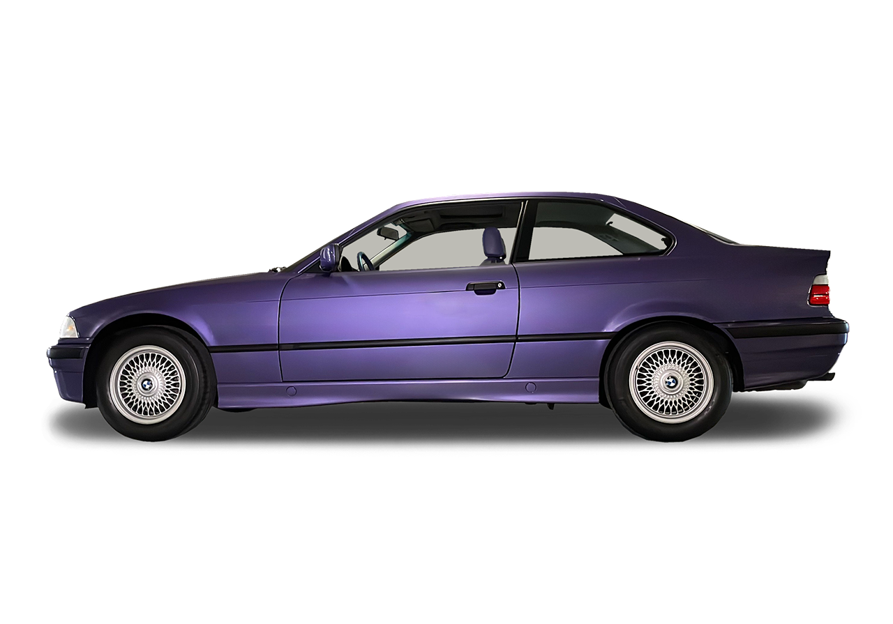

BMW 3 Series Sedan (E21)

The new BMW 3 Series was launched - as the successor to the 02 model series - only in a single bodywork style: as a two-door sedan. The styling followed the new line of Chief Designer Paul Bracq which had already been applied to the BMW 5 Series.
BMW 3 Series Coupé (E36)

The two-door 3 Series Coupé (E36) appeared for the first time as an independent version alongside the sedan, which was now only available as a four-door model. It was launched in the marketplace in 1992 and was discontinued in 1998.
BMW 3 Series Convertible (E36)

From 1993, the BMW 3 Series (E36) was also supplied in a full convertible version alongside the Topcabriolet from Baur, which had been available for some time. The contours were similar to those of the coupé with the flatter engine.